进制 (进位计数制) 是一种用固定数量的符号(数码) 和统一规则来表示数值的计数方法。
它的核心思想是“逢
十进制（基数
二进制（基数
八进制（基数
十六进制（基数
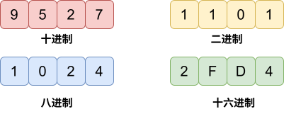
容易发现
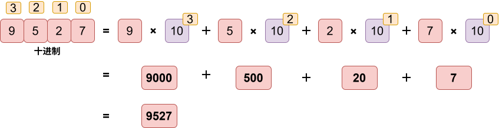
同理，其他进制也满足相同的规律。
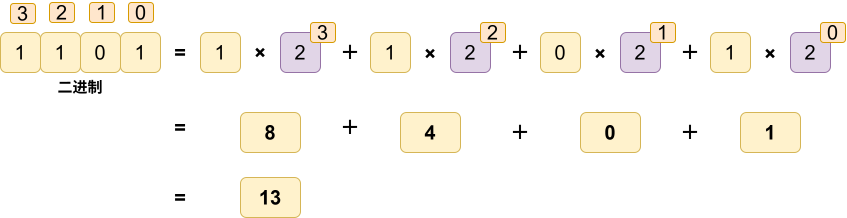
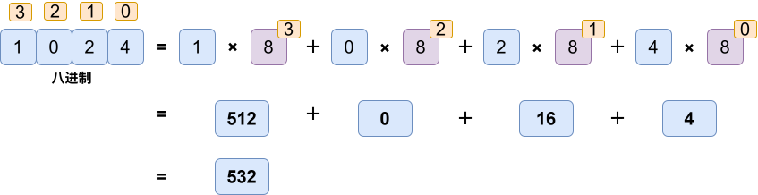
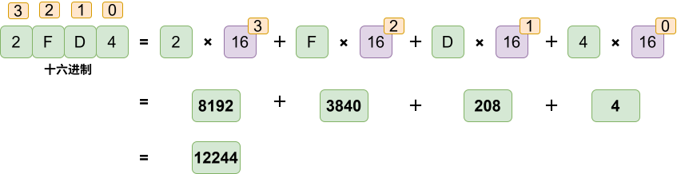
根据之前的规律，二进制转十进制的方法如下：
标号，从右至左，从
用每个数乘以
练习：二进制转十进制
代码：
1int bin2Dec(string s){2 int n=s.size();3 int ret=0;4 for(int i=0;i<n;i++){5 if(s[i]=='1') ret+=pow(2,n-i-1);6 }7 return ret;8}
十进制转二进制采用短除法。
除
重复上一个操作，直至为
将所有余数倒着书写。
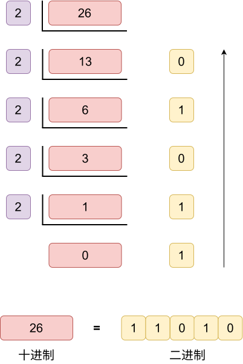
练习：十进制转二进制
代码：
xxxxxxxxxx101string dec2Bin(int n){2 if(!n) return "0";3 string ret="";4 while(n){5 ret+=char('0'+n%2);6 n/=2;7 }8 reverse(ret.begin(),ret.end());9 return ret;10}
X 进制与十进制的转换与 “二进制与十进制的转换” 类似。
标号，从右至左，从
用每个数乘以
练习：X进制转十进制
代码：
xxxxxxxxxx111int base2Dec(string s,int x){2 int n=s.size();3 int ret=0;4 for(int i=0;i<n;i++){5 int t;6 if('0'<=s[i]&&s[i]<='9') t=s[i]-'0';7 else t=s[i]-'A'+10;8 ret+=t*pow(x,n-i-1);9 }10 return ret;11}
同样采用短除法
除
重复上一个操作，直至为
将所有余数倒着书写。
练习：十进制转X进制
代码：
方法1：
xxxxxxxxxx121string dec2Base(int n,int x){2 if(!n) return "0";3 string ret="";4 while(n){5 int t=n%x;6 if(t<10) ret+=char('0'+t);7 else ret+=char('A'+t-10);8 n/=x;9 }10 reverse(ret.begin(),ret.end());11 return ret;12} 方法2：
xxxxxxxxxx111const string str="0123456789ABCDEFGHIJKLMNOPQRSTUVWXYZ";2string dec2Base(int n,int x){3 if(!n) return "0";4 string ret="";5 while(n){6 ret+=str[n%x];7 n/=x;8 }9 reverse(ret.begin(),ret.end());10 return ret;11}
学习过十进制与
但是二、八、十六进制的相互转换，可以使用更简单的方法。
因为计算机中使用的是二进制，所以二进制与十进制的相互转换经常遇到。利用8421法能够较快口算转换。
本质就是将进制的标号次方直接算出，拼凑出需要转换的数。
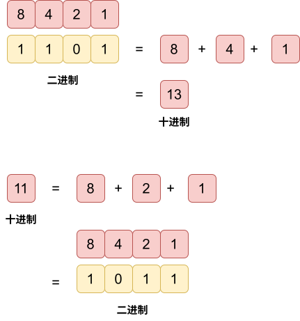
因为
那么我们只需要从右至左，每
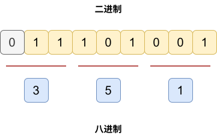
同理，我们只需要从右往左，把每位数字转为
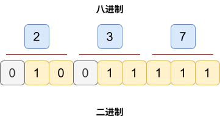
因为
后续的转换类比二进制转八进制即可。
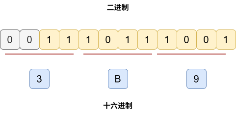
与八进制转二进制类似。
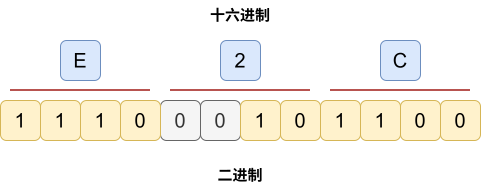
小数进制转换一般考察较少，这里以二进制小数和十进制小数为例讲解转换思路。
与整数转换的思路类似，
先标号。
从小数点后开始，从
每个数乘以
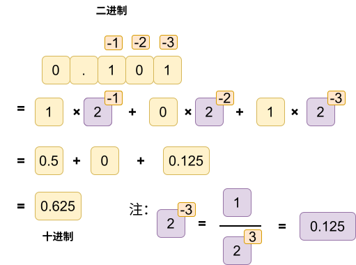
与整数十进制转二进制刚好相反。可以叫做 “长乘法”。
乘
重复上一个操作，直至为
将所有整数部分正着书写。
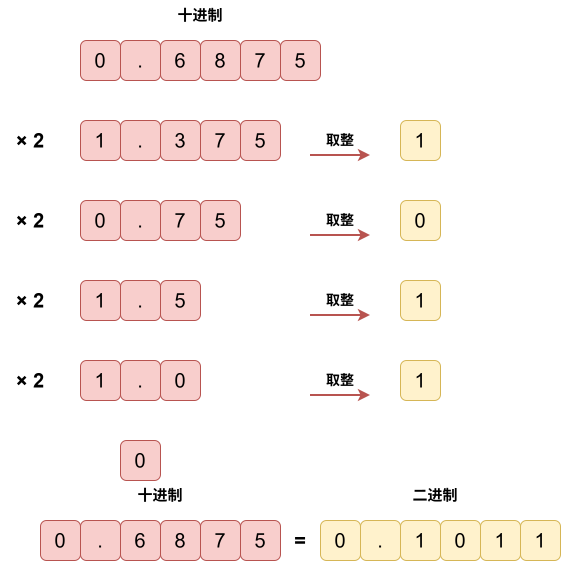
练习：小数进制转换